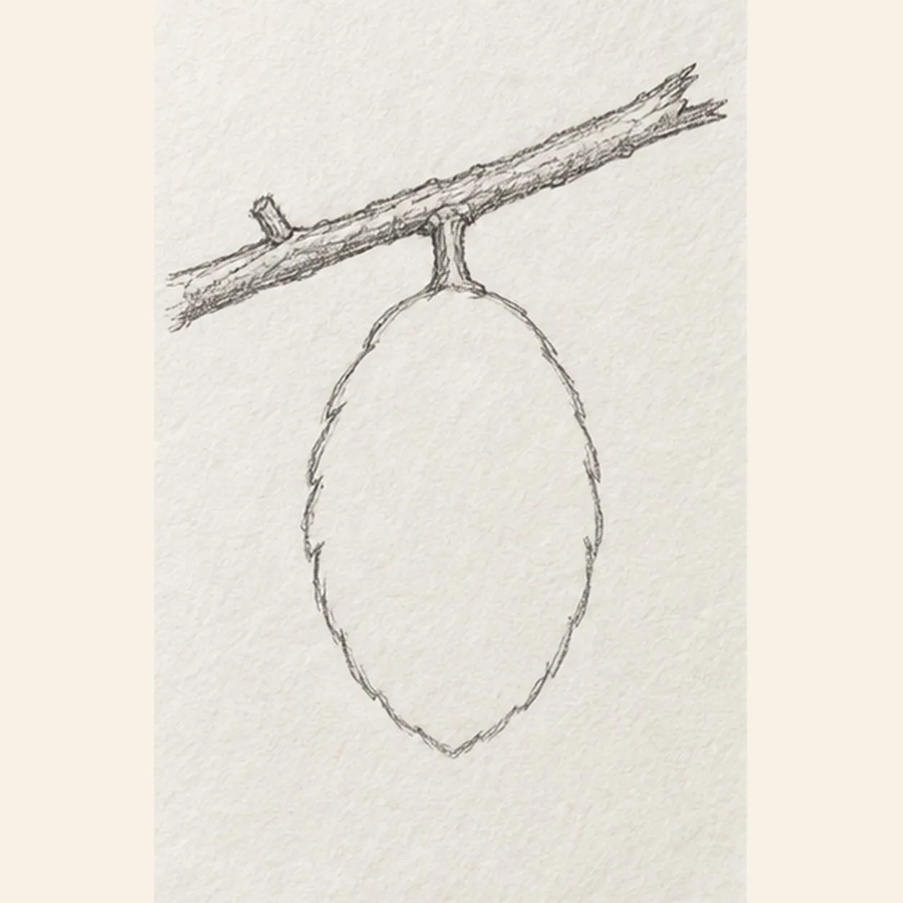
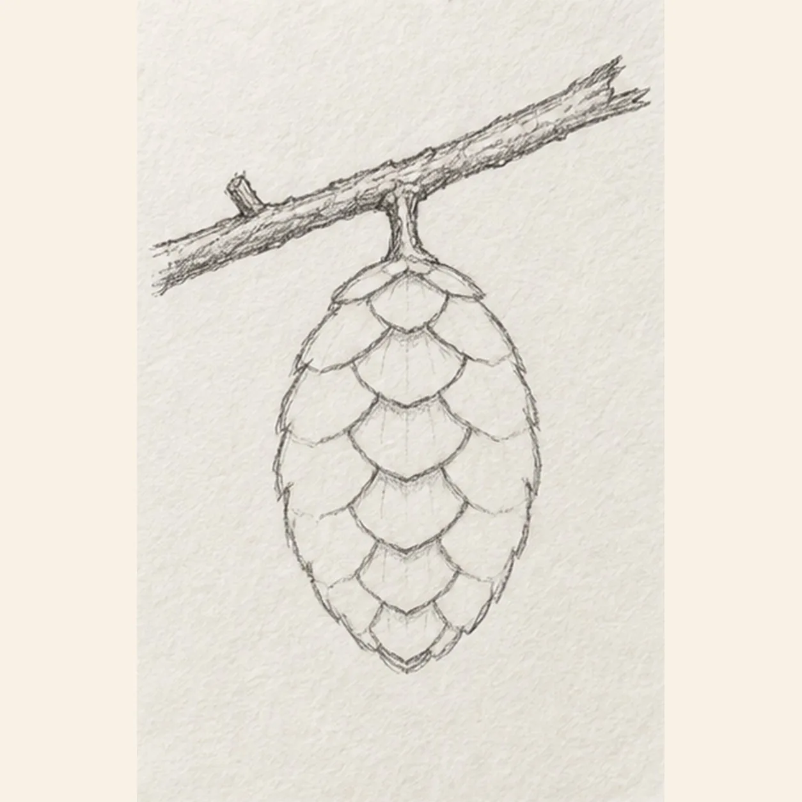
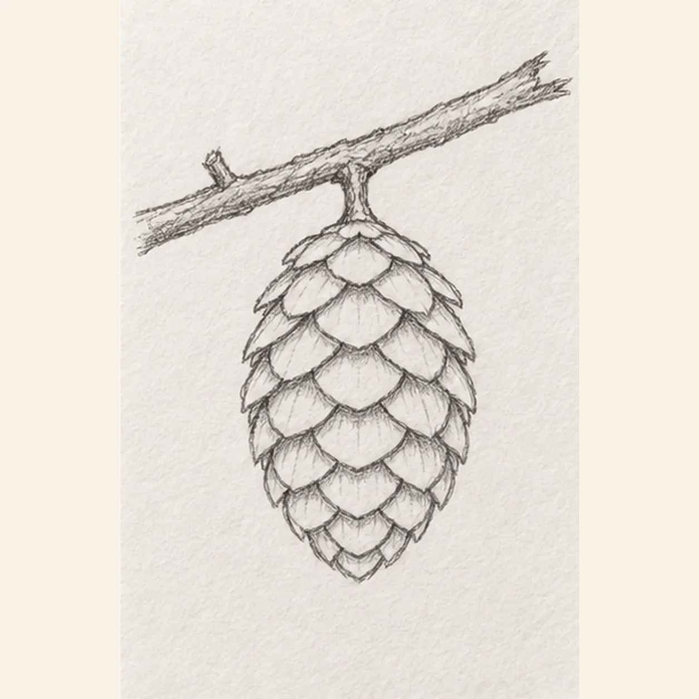
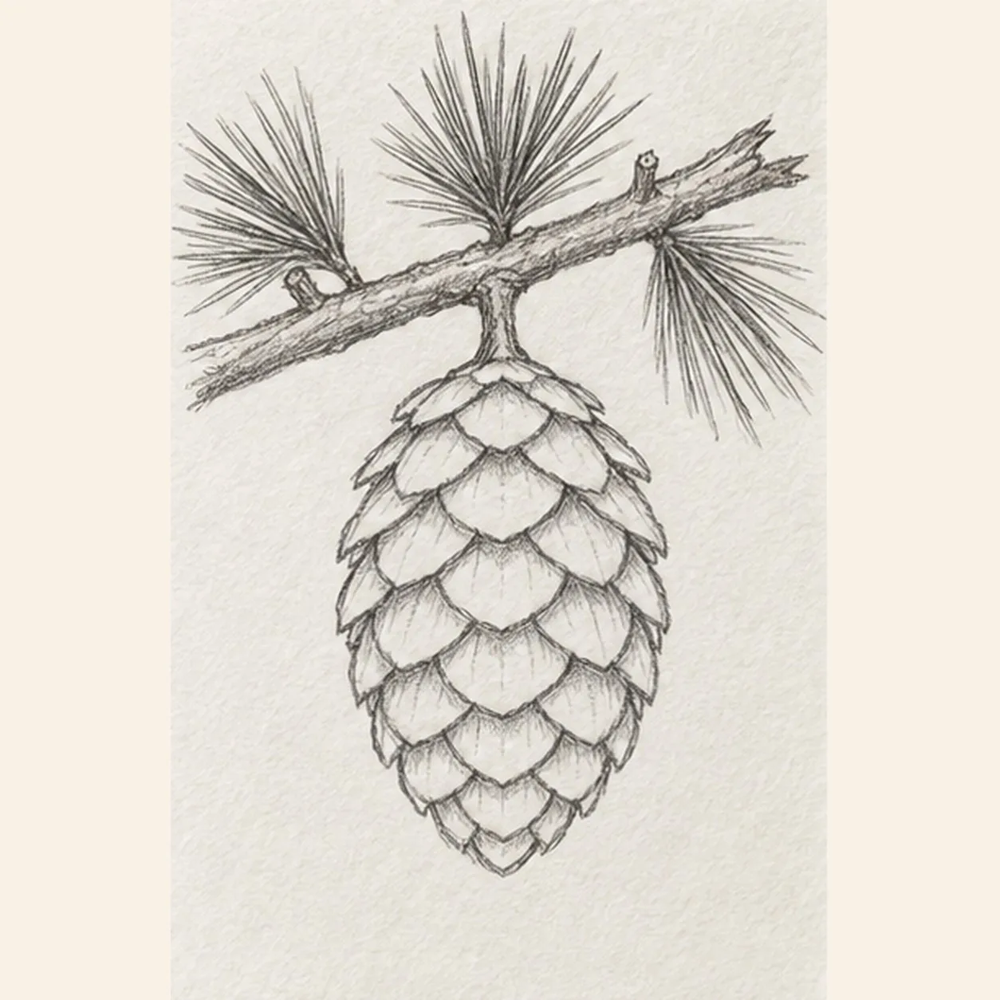
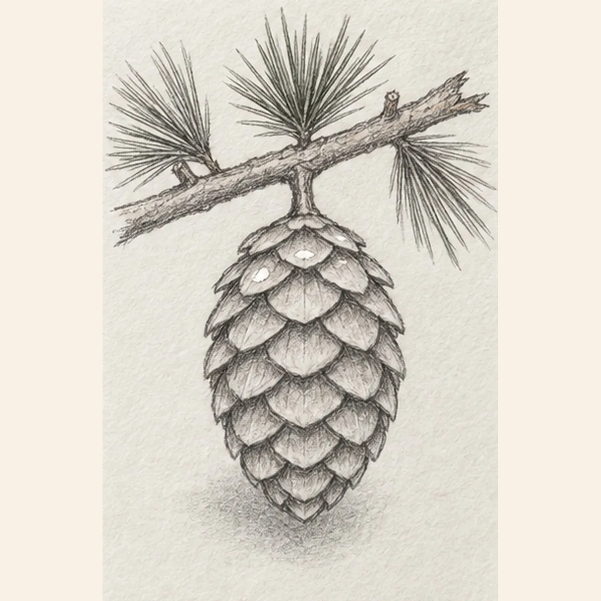

From the archive
Let's draw a pinecone
Treat this as one small practice round: build the subject lightly, notice the shapes, then darken only the lines that help the finished sketch.
-
01

Hang the cone from the branch
Draw one slightly broken branch from upper left toward upper right, keeping one short cut nub on its left half. From the branch middle, drop one short stem and wrap a plump egg-shaped pinecone around it, narrowing the lower end to a soft point.
Sketch tip: Ghost the branch angle first, then compare the cone width on both sides of its stem. The soft point should hang directly below the attachment.
-
02

Start the overlapping scales
Begin near the top center and stack broad U-shaped scales downward, overlapping each new row beneath the one above. Add one neighboring row on each side while keeping every scale inside the cone outline.
Sketch tip: Work from top to bottom so each lower scale tucks visibly beneath the earlier row. Keep the center rhythm larger than the side shapes.
-
03

Spread the scale pattern
Continue the curved scale rows out toward both cone edges. Make the side scales narrower and angle the lowest rows inward so the pattern closes neatly at the established bottom point.
Sketch tip: Squint at the negative spaces between rows. A gentle left-right stagger feels more natural than a rigid grid.
-
04

Grow the pine needles
Attach exactly three pine-needle clusters to the branch: one at the left end, one above the cone stem, and one at the right end. Add one short upper-right twig nub, keeping the earlier left nub and rooting every needle stroke visibly at its cluster base.
Sketch tip: Rotate the page and pull the needles away from each shared base in long relaxed strokes. Count three clusters and two total nubs.
-
05

Shade the scale lips
Darken just beneath selected scale lips so the overlaps read clearly, then place one soft broken shadow below the pinecone. Preserve exactly two small open-paper highlights across the upper scale rows.
Sketch tip: Use the side of a 2B pencil beneath the scales and lift pressure toward each tip. The shadows should explain overlap without filling every scale.
-
06

Color the woodland study
Layer warm brown through the established cone and branch, muted pine green along the same three needle clusters, and cool gray in the existing broken shadow. Keep the graphite scale pattern and both paper highlights visible, and add no new contours.
Sketch tip: Follow the direction of each scale and needle with light color strokes. Stop while the paper tooth and dark scale lips still carry the texture.
![Handmade graphite and restrained colored-pencil sketch of one left-facing pirate sailing ship with one warm-brown curved wooden hull, one blank stern cabin, one center mast, exactly two square cool-gray sails with two curved seams each, one forked muted-red pennant, one diagonal bowsprit, exactly three taut rigging lines, exactly three round hull portholes, exactly three broken desaturated-blue wave bands, exactly two cool-gray cloud wisps, exactly two open-paper sail highlights, and visible paper tooth](../assets/pirate-sailing-ship-at-sea-finished-v1.webp)